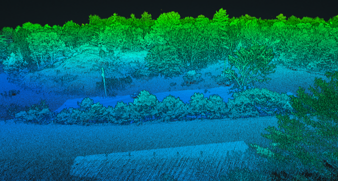
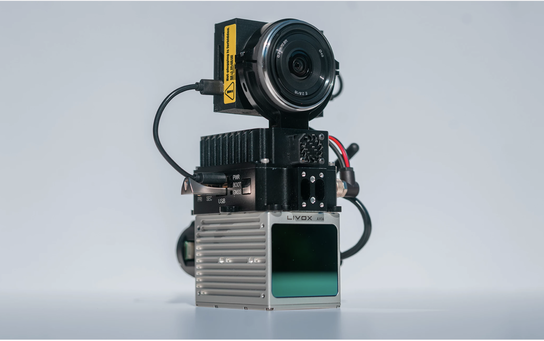

Classified point clouds
LAS/LAZ point clouds with ground and non-ground classification where required.
Bare-earth elevation data, classified point clouds, contours, CAD-ready surfaces, and engineering-ready deliverables for large-area sites.
Drone LiDAR Canada is a focused LiDAR service from Drone Services Canada Inc., built for commercial, engineering, development, and construction projects where elevation data drives decisions.
Our sweet spot is large sites where traditional collection is slow, vegetation hides the surface, or the project team needs reliable terrain information without waiting on a long field campaign.

Every project is scoped around the site, vegetation, accuracy requirements, and final use. Common outputs include the datasets needed for design, planning, earthworks, and documentation.
LAS/LAZ point clouds with ground and non-ground classification where required.
Terrain models that strip away vegetation to reveal practical ground elevation.
Contours, surfaces, and elevation products for planning and engineering review.
Linework, surfaces, and export formats prepared for downstream workflows.
Imagery deliverables when aerial context is useful alongside the LiDAR data.
Quantity and progress data for earthworks, stockpiles, and site management.
Survey-grade workflows with ground control, checkpoints, and QA/QC where required.
Clear delivery notes that help teams understand what was collected and delivered.

Photogrammetry is useful when the surface is visible. For vegetated land, LiDAR is often the better tool because laser returns can penetrate openings in the canopy and support bare-earth classification.
The result is terrain data that helps engineers, developers, and construction teams evaluate grade, drainage, access, corridors, and site constraints with more confidence.
The site is intentionally focused on professional LiDAR work: large-area topographic mapping, bare-earth surfaces, and engineering-ready data. If your team has a site boundary, target deliverables, and a real project decision to support, this is the right lane.
Terrain data for planning, preliminary design, drainage review, corridor evaluation, and site documentation.
Elevation models, contours, progress context, and surfaces for development and earthworks workflows.
Drone LiDAR collection for vegetated sites and difficult terrain where a bare-earth model is the useful product.
Visuals are not decoration here. The value is in the data layers: classified point clouds, bare-earth models, colourized surfaces, and the CAD/GIS-ready outputs your team can inspect and use.
Drone Services Canada Inc. is based in Southern Ontario and supports LiDAR projects across Canada.



Send your site area, location, vegetation conditions, and desired deliverables to Drone Services Canada Inc. We will help scope the right LiDAR approach.